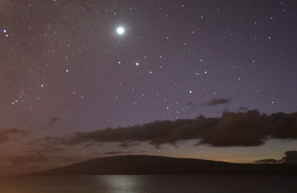

l
o
a
d
i
n
g
.
.
.


A legfényesebb égitestek közé tartozik, csupán a Nap és a Hold látszólagos fényessége múlja felül az övét. Maximális fényessége idején mintegy tizenötször fényesebb a legfényesebb csillagnál a Szíriusznál. Derült, Hold nélküli éjszakán a Vénuszt eltakaró tárgyak árnyékot vethetnek. Az a megfigyelő, aki tudja, hogy melyik irányban pillanthatja meg a bolygót, fényes nappal, szabad szemmel is észreveheti. Amikor legközelebb van a Földhöz, minden más bolygónál közelebb jut hozzánk, "alig" 42 millió kilométerre haladva el mellettünk.
A bolygó forgása nem direkt, mint a többi bolygótársáé, hanem éppen azzal ellentétes (retrográd). Mivel a bolygó felszínének egyetlen alakzatát sem vehetjük észre az égitestet burkoló, látszólag sűrű felhőtakaró miatt, a Vénusz tengelyforgási periódusát a bolygó felszínéről visszaverődött radarjelek elemzésével határozták meg, amely radarvisszhangok Vénusz-hegyekről és Vénusz-völgyekről is hírt adtak. A Vénusz mágneses tere rendkívül gyenge, amiben bizonyára szerepet játszik a nagyon lassú 243 földi napig tartó retrográd tengelyforgása. Az összes bolygópályák közül a Vénuszé hasonlít legjobban a körhöz.
Az első Vénusz mellett elrepülő űrszonda a Mariner-2 volt 1962-ben. A később bolygókörüli pályára állított Pioneer, Venyera és Magellán űrszondák, valamint földi rádiótávcsövek révén az égitestet radarral feltérképezték. A Pioneer adatai szerint a felszín 70%-át hullámzó dombokkal borított síkságok, 20%-át jól elkülönülő lesüllyedt mélyföldek, 10%-át nagyrészt 4 - 5 kilométerrel a felszín átlagos magassága fölé emelkedő magasföldi "kontinensek" alkotják.

A Vénuszból az alsó együttállás közelében csak egy nagyon keskeny sarló látszik.
Alig észrevehetően a sarló szarvacskái összezárulnak a bolygó körül, ami azt bizonyítja,
hogy a bolygónak számottevő légköre van, s ennek a részecskéin szóródott napfényt látjuk a sarló végei között.
Légkörének fő alkotórésze a szén-dioxid, a teljes légkör több mint 96%-a. A légkör nyomása a földiének 90-szerese.
A légkörét adó szén-dioxid régen hatalmas mennyiségben áradt a kitörő vulkánokból.
A Vénusz vulkánikusan ma is aktív, és a kéreg alól hő távozik a vulkánokon keresztül,
amelyek a légkörbe hatalmas mennyiségű kén-dioxidot pöfögnek ki, amelyből kénsavfelhők képződnek.
A Vénusz felhőrétege a felszín felett 20 km magasságban kezdődik és 30 km vastag.
A pólus és a Naptól több hőt kapó egyenlítői vidék közötti hőmérsékletkülönbség cirkuláló szélrendszert tart fenn.
A bolygó és a légkör között bonyolult kémiai reakciók hozták létre a kénsavfelhőket, melyekből kénsavas eső hullik a légkör felső rétegeiben.
Sok csillagász szerint sokkal régebben volt víz a Vénusz felszínén, de a Nap növekvő fényereje miatt megemelkedett hőmérséklet elég volt hozzá,
hogy megkezdődjék az óceánok fokozatos párolgása, ami viszont a légkörben növelte meg a vízgőz mennyiségét.
Mivel a vízgőz jól abszorbeálja az infravörös sugárzást az üvegházhatás fokozódott, ami tovább növelte a hőmérsékletet és gyorsította a párolgást.
A Vénusz a Merkúrhoz hasonlóan belső bolygó, és úgy tűnik számunkra, hogy az egyik kitérésből a másikba megy át a Nap körüli keringése során. Hol esti Csillagként, hol Hajnalcsillagként ötlik szemünkbe. Nem véletlenül hívta a népnyelv Esthajnalcsillagnak. Egyes ókori csillagászok úgy vélték, hogy két különböző égitestet látnak a Nap keleti illetve a nyugati oldalán. A hajnalban látható Vénuszt fényhozónak, Phoszporosznak, az alkonyatit pedig Atlasz fiáról Heszperosznak nevezték. Püthagorasz görög filozófus és matematikus ismerte föl elsőként, hogy Phoszporosz és Heszperosz ugyanaz az égitest.
A Vénusznak nincs holdja. Hold hiányában tömegét csak egyéb égitestekre való gravitációs hatása révén tudjuk meghatározni. A bolygónak mind tömege, mind mérete, mind pedig átlagos sűrűsége nagyon közel áll a Földre jellemző értékekhez, gyakran nevezik ezt az égitestet "bolygótestvérünknek" vagy "bolygónővérünknek". A Vénuszt állandóan elfedi előlünk sűrű felhőtakarója. A Hold és a Merkúr sötét színű, felszínével szemben a Vénusz a ráeső fény mintegy háromnegyedét visszaveri. A "bolygótestvéri" kapcsolat ellenére felszíne sokkal barátságtalanabb, mint a Földé.
